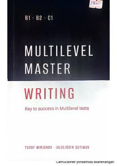

MMMultilevel imtihonining writing qismiga tayyorlanish uchun amaliy o'quv qo'llanma.
Ushbu o'quv qo'llanma ingliz tilini o'rganuvchilarga Multilevel imtihonlarining yozish (Writing) ko'nikmasini muvaffaqiyatli topshirish uchun ko'maklashadi. Kitobda Task 1 xatlar va boshqa topshiriqlar uchun amaliy tavsiyalar hamda namunalar keltirilgan. Nashr 2024 yilda Toshkent shahrida "Yetakchi nashriyoti" tomonidan chop etilgan.